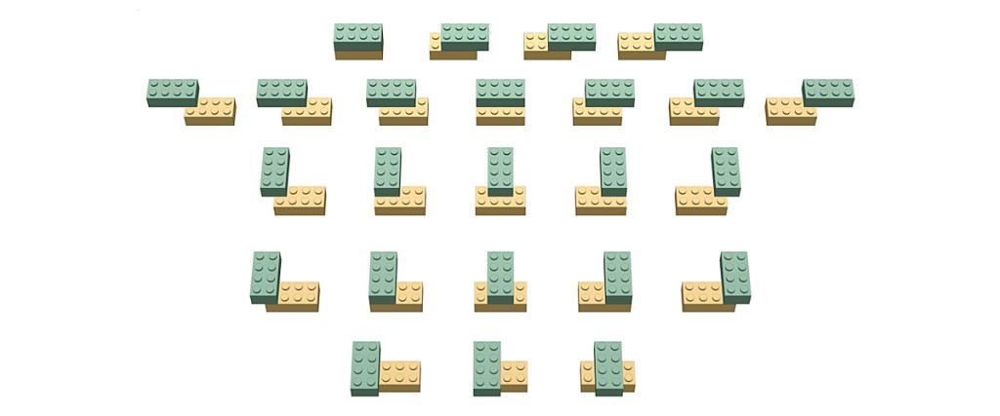
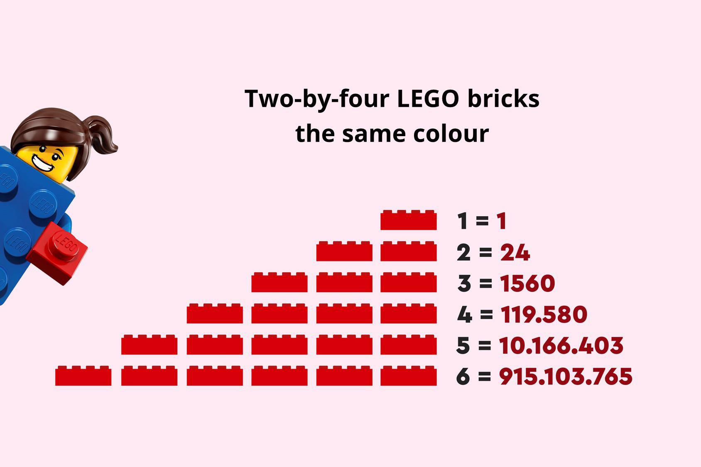
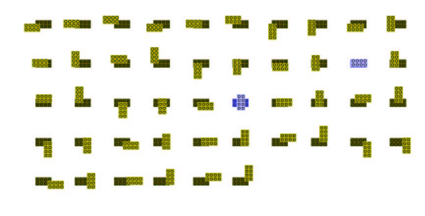
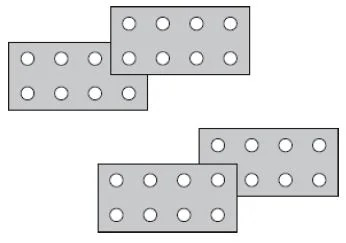
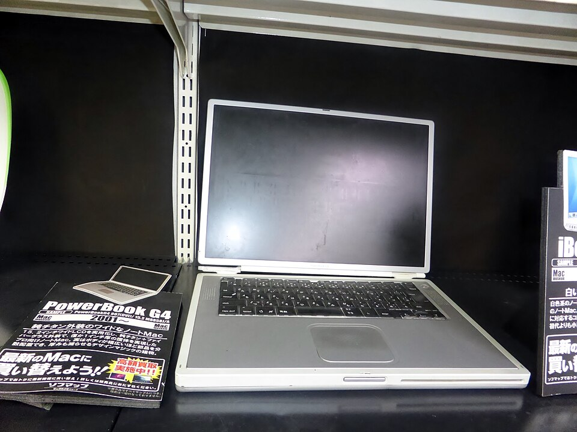

LEGO. It's such a simple childhood toy that I have played with from a very young age, and I'm sure most of the people reading this would have as well. However, most don't realise how much maths can be behind such a simple plastic block.
Specifically, the number of combinations several bricks (as seen in the pictures underneath) can have with each other. In 2004, Professor Søren Eilers published his findings and calculations of the correct number of combinations for just six LEGO bricks. He used a computer program and determined that the true number of combinations was 915,103,765. This broke the already published amount from the official LEGO Group of 102,981,500, and after reading this, I want you to see the maths behind both calculations and how there was a difference of over 812 million combinations.

Six bricks stacked straight up, worked out by hand.
Every possible build, counted by a computer program.
For you to truly understand, I believe we should start by looking at the number of combinations from one singular LEGO brick all the way to the 915,103,765 combinations of six bricks.

So starting with one brick, there is obviously only one combination, and that is just the brick itself. However, when we get to two bricks, that number gets larger and the number of combinations rises to 24. This accelerates up again with three bricks to 1,560, and so on. This is a clear example of exponential growth and how the number of combinations basically explodes as we increase the amount of bricks.
For the original calculations, the man behind it was Jørgen Kirk Kristiansen. He calculated this with a few simple steps. To start with, he only accounted for the combinations where the six bricks were directly on top of each other, so this means he only accounted for structures that were six bricks high and ignored side-by-side connections. Afterwards, he followed some simple logic and looked at the individual brick, realising that there are exactly 46 different ways to stack two bricks on top of each other. So through this, he deduced that if we stack six bricks on top of each other, the maths behind this would just be 46⁵, because if there are 46 ways to place the second brick on the first, there are also 46 ways for the third brick, and so on.
This would leave the total raw permutations at 205,962,976. However, this would not be the final result, as the researchers would then remove duplicate shapes caused by a 180-degree rotation (this is why there are only 24 ways with two bricks as, even though there are 46 ways to connect them, some are duplicates and if rotated are the same). This can be simply explained through the fact that bricks are symmetrical. Through this, they divided their original calculations by two but adjusted some perfectly symmetrical structures that should not be halved and ended up with a total number of combinations of 102,981,500.


In 2004, Professor Søren Eilers used computational mathematics to try and calculate the true number of combinations. He accomplished this by writing his own custom program in Java that simulated every possible connection. At this time, his home computer, which was an Apple Powerbook G4, had to run this program for an entire week to fully iterate through all the possible combinations. However, with the development of technology, this can now be done in roughly 5 minutes.

After letting his program run for a week, he had to validate his findings and calculations by asking a high school student by the name of Mikkel Abrahamsen to write a different program in another programming language. After both programs arrived at the same exact number, the result was confirmed and the total number of combinations was 915,103,765.
builds were missing from the original count, mostly because it only allowed straight towers.
As we can clearly see, the "tower" constraint of the original number of combinations played a massive role and was one of the main factors that led to that 812 million difference, and it illustrates how a slight change can have a massive impact. Also, it just shows the endless possibilities of LEGO and the fact that with only 6 of the same brick we can have 915,103,765 combinations; it reveals the endless possibilities that LEGO has with all its different pieces.
Eilers S (2005) The LEGO Combinatorics Project
The LEGO Group website
Abrahamsen M (2004) Verification of LEGO Combinatorics